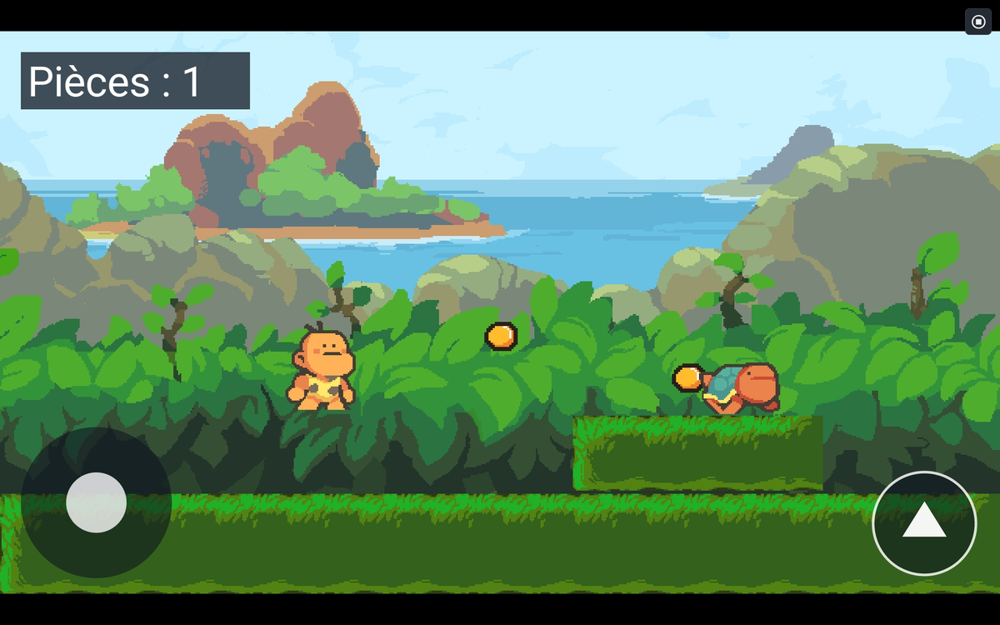
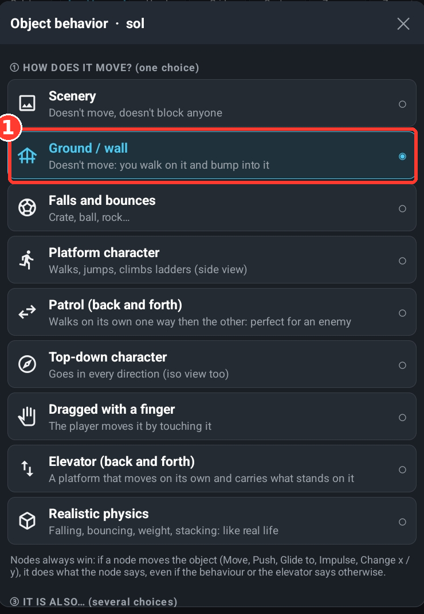
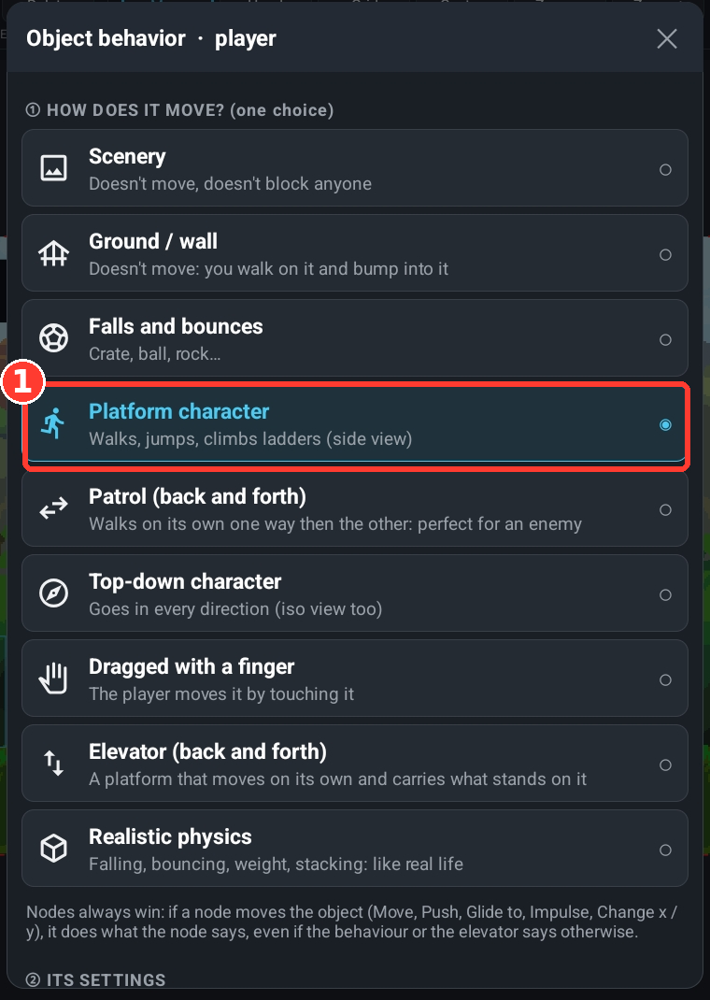
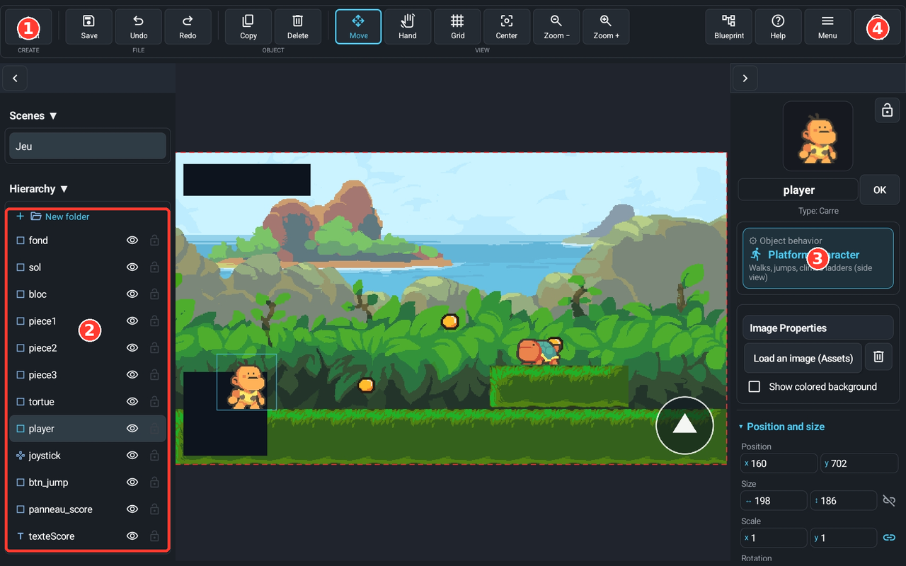
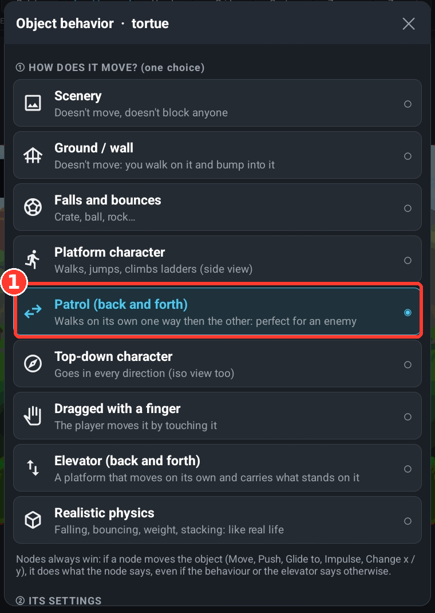
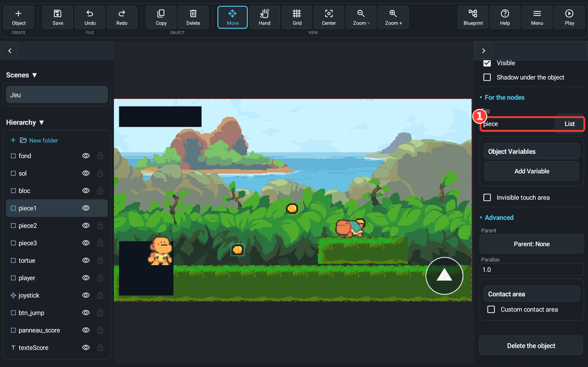
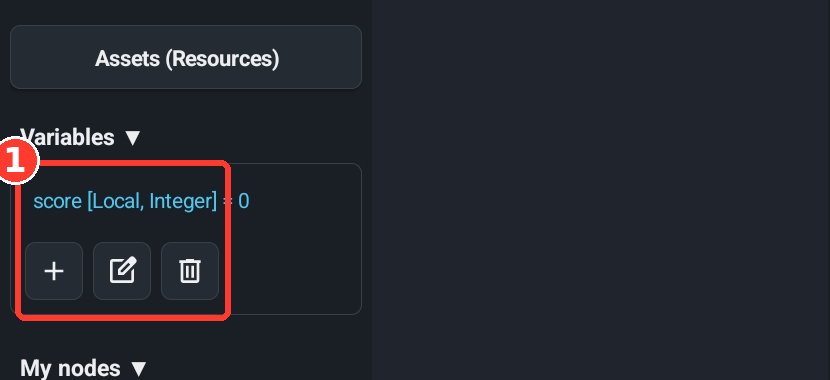
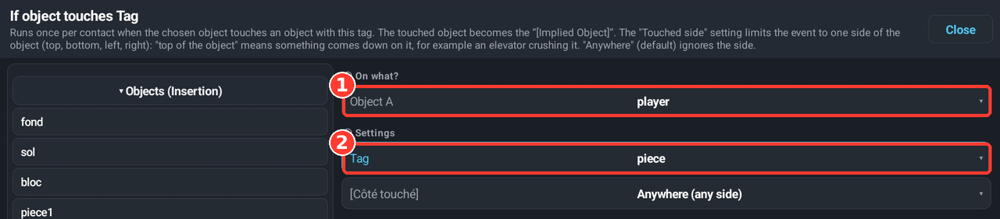
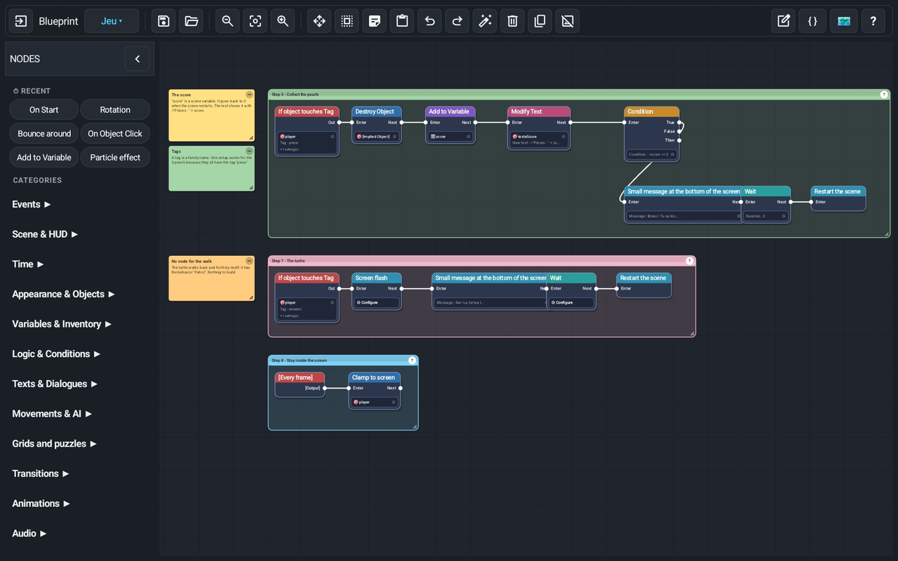
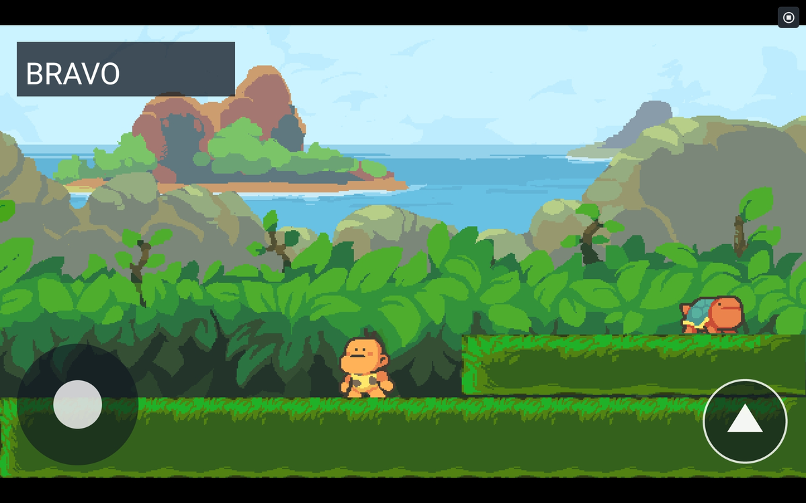

In this tutorial you make a small platformer in about half an hour, without writing any code: a hero who runs and jumps, three pearls to collect, a turtle that walks back and forth on a block, and a score. If you get stuck, compare with the finished project (import it into Yop2D: its nodes are tidied up with frames and sticky notes that explain everything).

- an empty game in landscape (tap New game on the start screen);
- the images of the Prehistory theme in the Yop2D Library (free, royalty-free): background, ground, hero, turtle and pearl;
- a little time: every step is short.
Step 1: the background, the ground and a block
- Tap Object (top left), then Image. The Yop2D Library opens: choose the Prehistory theme, the Backgrounds folder, then the jungle background. It places itself behind everything.
- Do Object → Image again and take a grass ground in Ground and platforms. Place it at the very bottom and stretch it across the screen. Name it sol in the inspector.
- Tap ⚙ Behavior (in the inspector) and choose Ground / wall: the hero will walk on it and not fall through.
- Add a small grass platform and place it higher, on the right, about 150 pixels above the ground. Give it the Ground / wall behavior too. Name it bloc.

Step 2: the hero
- Object → Image → Library, Prehistory theme, Characters folder. Choose the caveman with With its animations: the image and the animations (idle, walk…) are added at once. Put him on the ground and name him player.
- ⚙ Behavior → Platform character: he walks, jumps and falls.
- Add a Joystick at the bottom left and a round button at the bottom right for jumping. Select the joystick and, in the inspector, choose player in the Object to move field: without a target, the joystick does not know who to move. Then, in the hero's behavior window, choose the round button as the jump button. The guide Moving a character" explains the joystick and jumping.


Step 3: the patrolling turtle
- Object → Image → Library, Prehistory theme, Monsters folder: take the turtle and place it on the block. Name it tortue.
- ⚙ Behavior → Patrol (back and forth): it walks by itself one way then the other and turns around at the edge of the block. No node needed.
- In the inspector, For the nodes section, write the tag ennemi. You will need it in step 6.

Step 4: the three pearls
- Object → Image → Library, Prehistory theme, Objects folder: take the gold pearl. Place it within jumping reach, for example on the ground. Name it piece1.
- In the inspector, For the nodes section, write the tag piece (no accent, all lowercase).
- Tap Copy (at the top) twice: the copies appear near the original. Move them: one in the air above the ground, the last one above the block, high enough that the turtle cannot touch it. They keep the same tag piece.

Step 5: the score
- In the left panel, Variables section, tap + and create a variable score: type integer, starting value 0, local to the scene.
- Object → Text: write Pièces : 0, put it at the top left and name it texteScore. To keep it readable, make it bigger (font size 60 to 70); if you put a small dark panel behind it, check that the text is in front (its Z must be higher than the panel's).

Step 6: the nodes
Now tell the game what happens when the hero touches something. Tap Blueprint (top right): the node screen opens. To place a node, open a category on the left and tap it; to connect two nodes, drag a wire from the output of the first to the input of the next.
- When the hero touches a pearl. Place the If object touches Tag event: Object A = player, Tag = piece. Connect, in order: Destroy Object (on The involved object, i.e. the pearl just touched), Add to Variable (variable score, value 1), then Modify Text (object texteScore, text written with the value
="Pièces : " + score, which shows the score). - When the score reaches 3. Add a Condition node after it with
=score >= 3. On its True output, connect: Modify Text (texteScore, text BRAVO), Wait (6 seconds) then Restart the scene. - When the hero touches the turtle. A second If object touches Tag event: Object A = player, Tag = ennemi. After it: Screen flash, Small message at the bottom of the screen (a small "Ouch!" message), Wait (1 second) then Restart the scene.
- Stay inside the screen. A Every frame event connected to Clamp to screen (object player) keeps the hero from leaving the level.


Step 7: play!
Tap Play. Run, jump, collect the pearls: the text at the top left counts them. Climb onto the block to take the last pearl without touching the turtle. After three pearls, BRAVO appears, then the game restarts.

Going further
- Add more pearls, turtles and blocks: the nodes you already built keep working thanks to the tags.
- Add sounds (a "ding" for each pearl) with the Play sound node, or a background music.
- Give the hero lives: Losing lives and game over.
- Go to a next level when you win: Going to the next level.